速览
想想 2D 或 3D 格斗游戏：如果效果音真是真实的声音，大概不会被接受到这种程度。这是评价最好的格斗游戏之一、初代《街头霸王 2》的命中音：升龙拳——满是谎言对吧？尤其海外的人可能会觉得「这是什么声音」。他感觉这是昭和黑帮电影那样的夸张。电影做法各种各样，但日本本来就有夸张声音的文化，即使不算动画；想必音响师们下了各种苦功。电影和游戏都一样，影像越写实，夸张声音的违和感越大。但如果游戏用完全写实的声音，打人时只有「啪」一声，那一定很不满足。本来如果没有「格斗游戏和真实格斗相距甚远」的意识，就会从游戏本质偏离。另一方面，写实的声音也有相应的好处：毕竟能给原本没有意义的地方赋予意义。听听声音意外写实系的《我的世界》的效果音：让声音写实，人能补足信息量——例如合成时发出「咚咚」声，就能想象做了什么、怎么做的；动起来简单、只有粗糙贴图的六面体，也能感到确实有木头和石头的重量。声音既可夸张也可写实，取得与游戏相称的平衡，游戏的实体感会确实增加。
1. 格斗游戏的声音 0:03
想想格斗游戏：如果效果音真是真实的声音，大概不会被接受到这种程度。
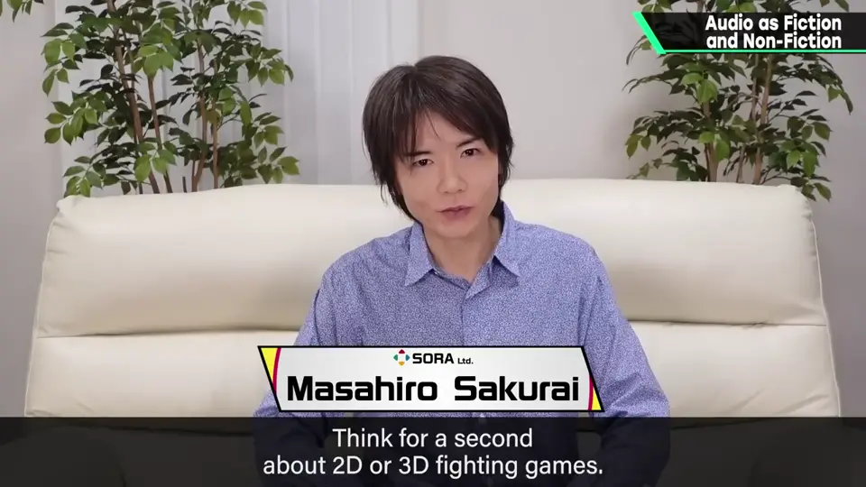
这是评价最好的格斗游戏之一、初代《街头霸王 2》的命中音：升龙拳——满是谎言对吧？
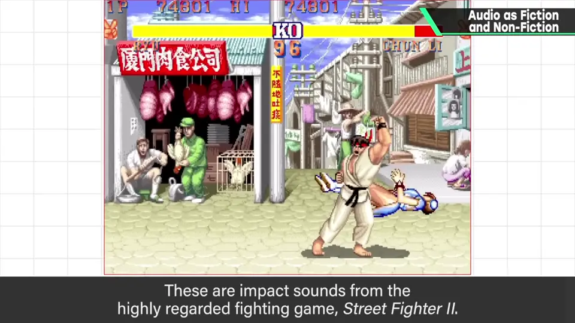
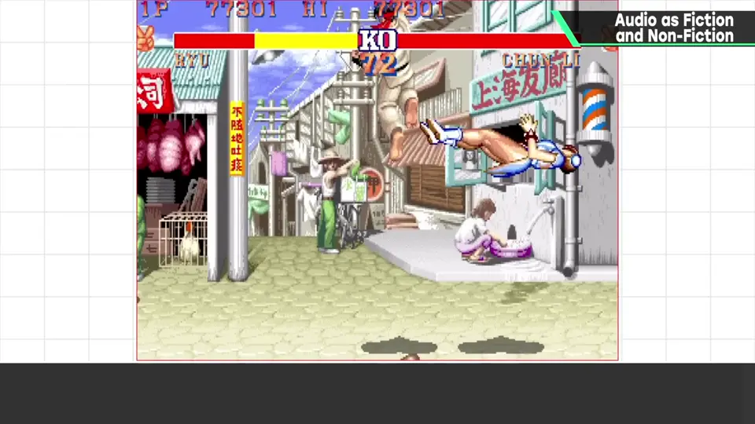
尤其海外的人可能会觉得「这是什么声音」。
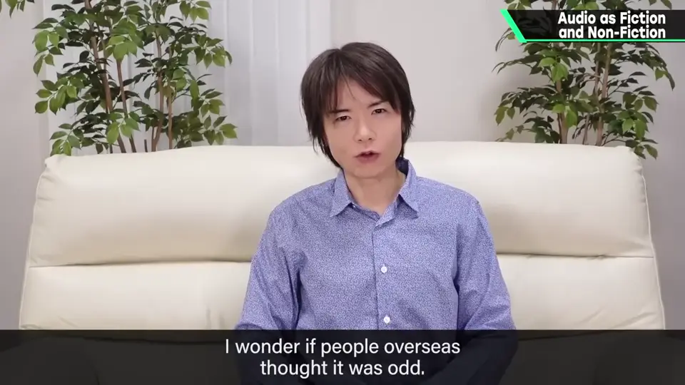
2. 夸张的文化 0:44
他感觉这是昭和黑帮电影那样的夸张。
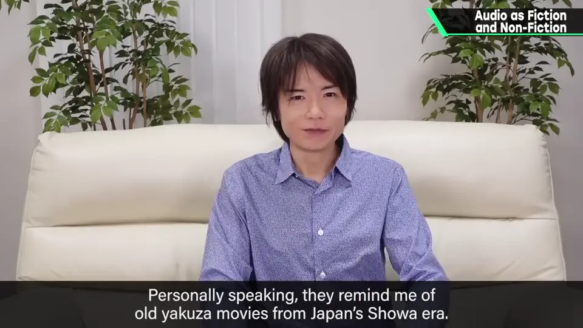
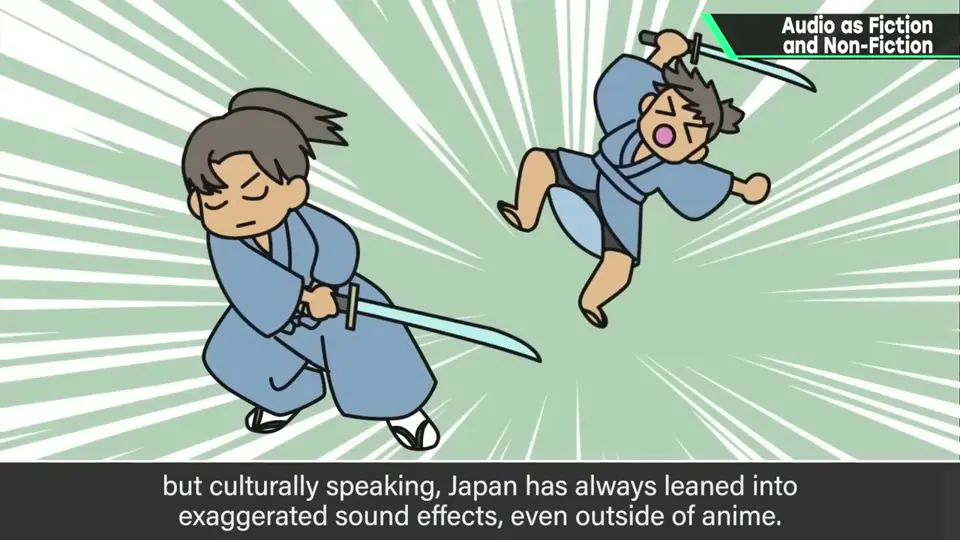
3. 写实画面的矛盾 1:03
电影和游戏都一样：影像越写实，夸张声音的违和感越大。
但如果游戏用完全写实的声音，打人时只有「啪」一声，那一定很不满足。
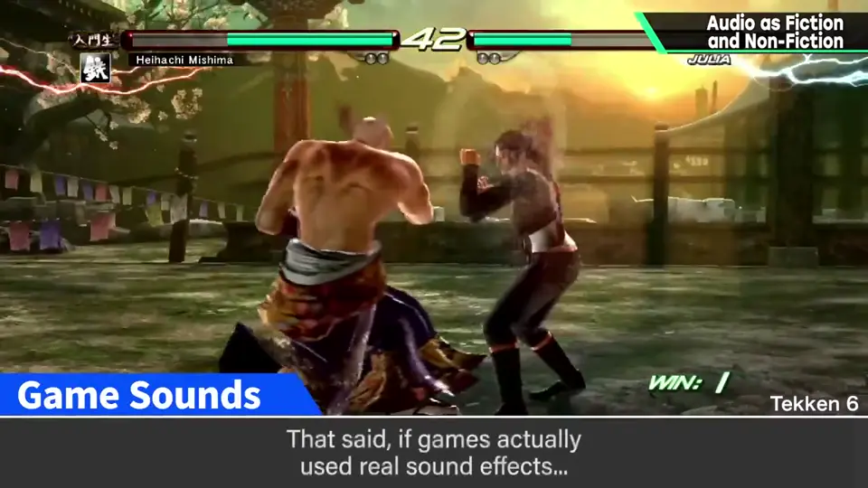
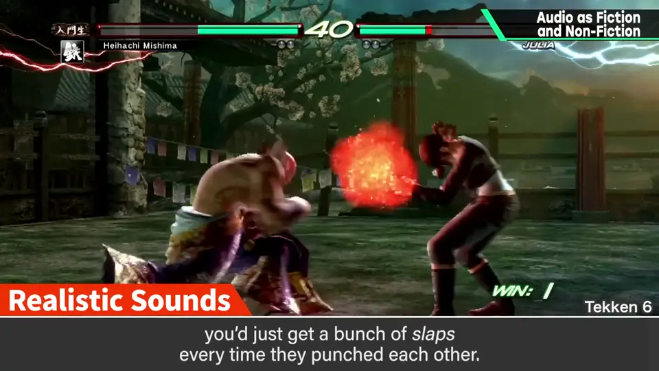
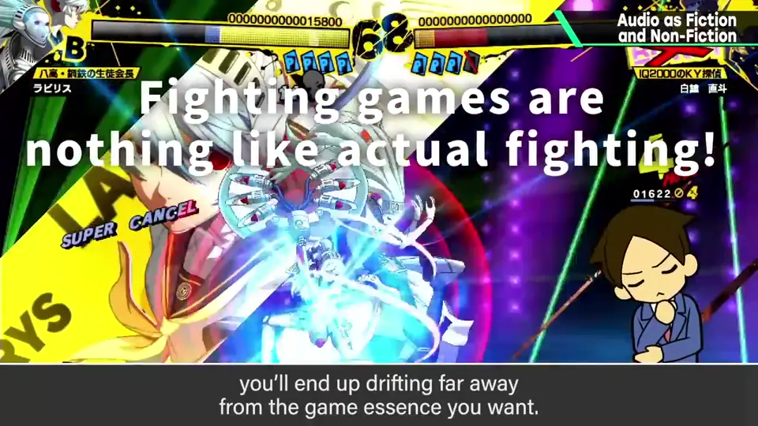
4. 写实声音的好处 1:33
另一方面，写实的声音也有相应的好处：能给原本没有意义的地方赋予意义。
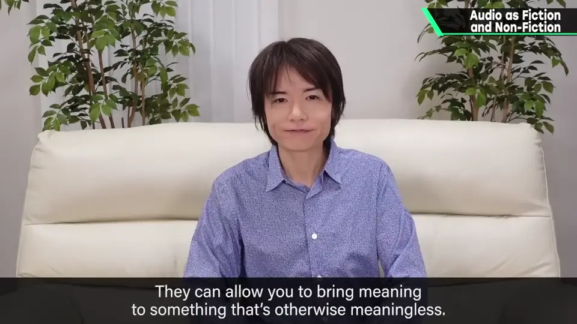
听听声音意外写实系的《我的世界》：让声音写实，人能补足信息量。
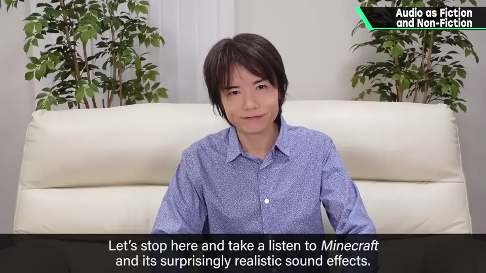
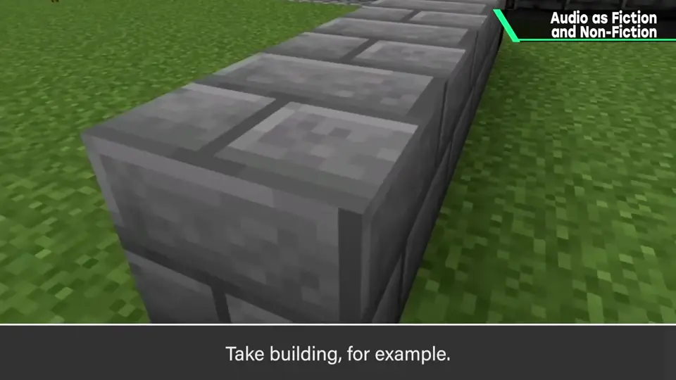
例如合成时发出「咚咚」声，就能想象做了什么、怎么做的。动起来简单、只有粗糙贴图的六面体，也能感到确实有木头和石头的重量。
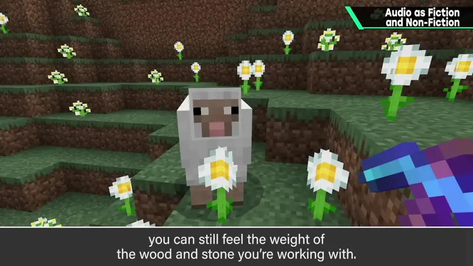
5. 平衡 2:27
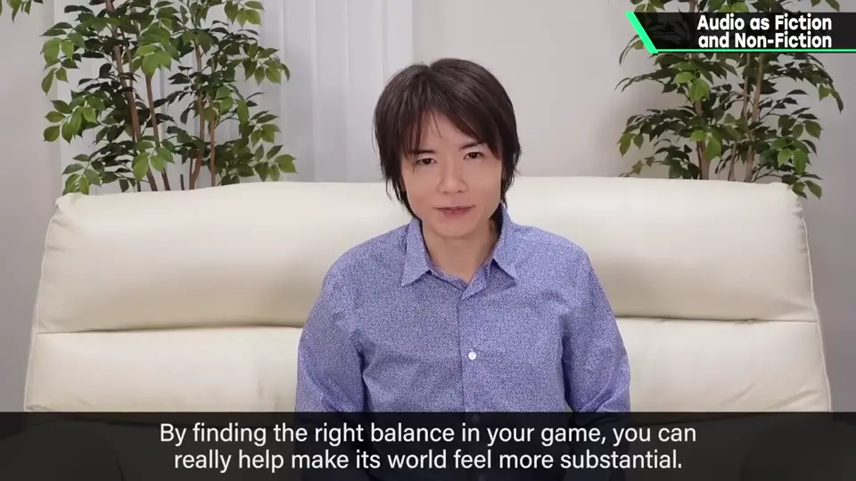
自测题
1. 《街霸 2》升龙拳的声音体现了什么？
夸张的声音文化，像昭和黑帮电影；真实声音反而不会被接受。 0:40
2. 完全写实的打击声有什么问题？
打人只有「啪」，不够有手感；格斗游戏本就和真实格斗相距甚远。 1:17
3. 写实声音的好处是什么？举例。
能补足信息、赋予意义：《我的世界》的方块靠声音有了木石的重量。 2:10